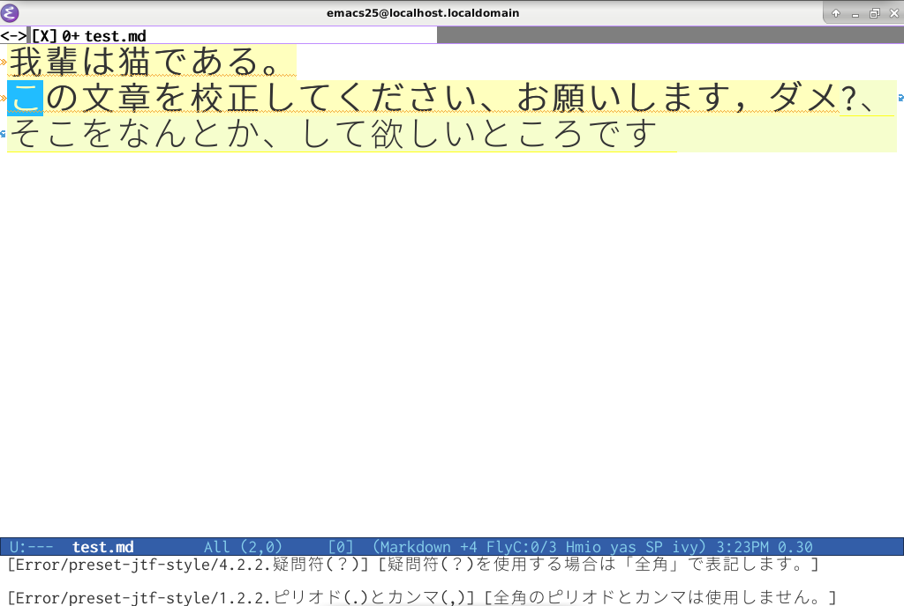

emacs の flycheck で textlint を利用し、日本語の自動校正を行う
目次
1. 目的
textlint を emacs の flycheck で利用し、日本語の文章をチェックするよう設定する。

校正ルールとして以下を利用する。
- textlint-rule-preset-japanese(入門向け日本語のプリセット)
- 一文で使える"、"の数
- 逆接の接続助詞「が」が、同一文中に複数回出現していないかどうか
- 同じ接続詞で開始されていることを検出
- 二重否定の検出
- 二重助詞の検出
- 一文の最大の長さ
- ら抜き言葉の使用
- 文の敬体(ですます調)、常体(である調)の混合をチェック
- UTF8-MAC 濁点の検出
- 制御文字の検出
- textlint-rule-preset-JTF-style
2. Windows
2.1. 環境
- Windows 7/10 pro
- nodejs 10.5.0
- textlint 10.2.1
- emacs 25.2.1/26.1
2.2. nodejs のインストールと設定
textlint は npm で提供されているため、nodejs をインストールする。 ここでは textlint だけのために nodejs をインストールするため、インストーラーは使用しない。 すでにインストール済みの場合、この作業は不要である。
- nodejsの公式 より、[other download] を選択
- [Windows Binary (.zip)] より、[64bit] を選択
- [node-v10.5.0-win-x64.zip] を適当な場所(例えば %HOME%\app\node-v10.5.0-win-x64)に展開1
(オプション) 以下の手順で Proxy を設定する
PS > cd $Env:HOME\app\node-v10.5.0-win-x64 PS > .\npm config set proxy http://proxy.example.com:8080 PS > .\npm config set https-proxy https://proxy.example.com:8080
2.3. textlint のインストールと設定 2
textlint をインストール (ちょっと時間かかる)
PS > .\npm install -g textlint
ルールプリセットのインストール (ちょっと時間かかる)3, 4
PS > .\npm install -g textlint textlint-rule-preset-japanese textlint-rule-preset-jtf-style
設定ファイルを作成
PS > cd $Env:HOME PS > .\app\node-v10.5.0-win-x64\textlint --init
作成された設定ファイル [~/.textlintrc] を開き、以下のように編集
{ "rules": { "preset-japanese": true, "preset-jtf-style": true } }テスト用の test.md を utf-8 で以下のように作成5, 6
我輩は猫である。 この文章を校正してください、お願いします, ダメ?、そこをなんとか、して欲しいところです
テストを実行
PS > .\app\node-v10.5.0-win-x64\textlint --version v10.2.1 PS > .\app\node-v10.5.0-win-x64\textlint test.md HOME\test.md 1:5 error 本文: "である"調 と "ですます"調 が混在 => "である。" がである調 Total: である : 1 ですます: 1 preset-japanese/no-mix-dearu-desumasu 2:21 ✓ error 句読点には全角の「、」と「。」を使います。和文の句読点としてピリオド(.)とカンマ(,)を使用しません。 preset-jtf-style/1.2.1.句点(。)と読点(、) 2:25 ✓ error 疑問符(？)を使用する場合は「全角」で表記します。 preset-jtf-style/4.2.2.疑問符(？) ✖ 3 problems (3 errors, 0 warnings) ✓ 2 fixable problems. Try to run: $ textlint --fix [file]
2.4. emacs の設定
init.el を以下のように設定する。
;; add PATH
(setenv "PATH"
(concat
"~/app/node-v10.5.0-win-x64;"
(getenv "PATH")))
(setq exec-path (parse-colon-path (getenv "PATH")))
;; flycheck for textlint
(require 'flycheck)
(flycheck-define-checker textlint
"A linter for prose."
:command ("textlint" "--format" "unix" source-inplace)
:error-patterns
((warning line-start (file-name) ":" line ":" column ": "
(id (one-or-more (not (any " "))))
(message (one-or-more not-newline)
(zero-or-more "\n" (any " ") (one-or-more not-newline)))
line-end))
:modes (text-mode markdown-mode))
(add-to-list 'flycheck-checkers 'textlint)
(add-hook 'markdown-mode-hook 'flycheck-mode)
3. Linux (Debian)
3.1. 環境
- debian 9.4
- nodejs 10.5.0
- textlint 10.2.1
- emacs 25.1.1
3.2. nodejs のインストールと設定
textlint は npm で提供されているため、nodejs をインストールする。 Debian Stretch で提供されている nodejs ではバージョンが古く、npm も提供されないため、公式サイトからダウンロードしてくる必要がある。 ここでは textlint だけのために nodejs をインストールするため、パッケージは使用しない7。 すでにインストール済みの場合、この作業は不要である。
- nodejsの公式 より、[other download] を選択
- [Linux Binaries (x64)] より、[64bit] を選択
- [node-v10.5.0-linux-x64.tar.xz] を適当な場所(例えば ~\app\node-v10.5.0-linux-x64)に展開1
(オプション) 以下の手順で Proxy を設定する
$ cd ~/app/node-v10.5.0-linux-x64/bin $ ./node npm config set proxy http://proxy.example.com:8080 $ ./node npm config set https-proxy https://proxy.example.com:8080
3.3. textlint のインストールと設定 2
textlint をインストール (ちょっと時間かかる)
$ ./node npm install -g textlint
ルールプリセットのインストール (ちょっと時間かかる3)
$ ./node npm install -g textlint-rule-preset-japanese textlint-rule-preset-jtf-style
設定ファイルを作成
$ cd ~ $ ./app/node-v10.5.0-linux-x64/bin/node ./app/node-v10.5.0-linux-x64/bin/textlint --init
作成された設定ファイル [~/.textlintrc] を開き、以下のように編集
{ "rules": { "preset-japanese": true, "preset-jtf-style": true } }テスト用の test.md を utf-8 で以下のように作成5, 6
我輩は猫である。 この文章を校正してください、お願いします, ダメ?、そこをなんとか、して欲しいところです
テストを実行
$ ./app/node-v10.5.0-linux-x64/bin/node ./app/node-v10.5.0-linux-x64/bin/textlint --version v10.2.1 $ ./app/node-v10.5.0-linux-x64/bin/node ./app/node-v10.5.0-linux-x64/bin/textlint test.md /home/clothoid/test.md 1:5 error 本文を敬体(ですます調)に統一して下さい。 本文の文体は、敬体(ですます調)あるいは常体(である調)のどちらかで統一します。 "である。"が常体(である調)です。 preset-jtf-style/1.1.1.本文 1:5 error 本文: "である"調 と "ですます"調 が混在 => "である。" がである調 Total: である : 1 ですます: 1 preset-japanese/no-mix-dearu-desumasu 2:21 ✓ error 全角のピリオドとカンマは使用しません。 preset-jtf-style/1.2.2.ピリオド(.)とカンマ(,) 2:24 ✓ error 疑問符(？)を使用する場合は「全角」で表記します。 preset-jtf-style/4.2.2.疑問符(？) ✖ 4 problems (4 errors, 0 warnings) ✓ 2 fixable problems. Try to run: $ textlint --fix [file]PATH の追加
$ export PATH=$PATH:~/app/node-v10.5.0-linux-x64/bin/
3.4. emacs の設定
init.el を以下のように設定する。
;; flycheck for textlint
(require 'flycheck)
(flycheck-define-checker
textlint
"A linter for prose."
:command ("textlint" "--format" "unix" source-inplace)
:error-patterns
((warning line-start (file-name) ":" line ":" column ": "
(id (one-or-more (not (any " "))))
(message (one-or-more not-newline)
(zero-or-more "\n" (any " ") (one-or-more not-newline)))
line-end))
:modes (text-mode markdown-mode))
(add-to-list 'flycheck-checkers 'textlint)
(add-hook 'markdown-mode-hook 'flycheck-mode)
4. やりたいけど、分からないこと
- org-mode への対応8
- "You must install peer dependencies yourself" と出る理由への対処(nodejs インストーラー版やパッケージでも同じ)
- Windows と debian で textlint の出力結果が微妙に違う理由への対処
- PATH を init.el に設定する方法(現在は .bashrc に書いて exec-path-from-shell.el で対処)
5. 参考
脚注:
Windows の場合、いわゆる"ホームディレクトリ"は環境変数 HOME で指定できる
textlint だけでは校正ルールが入っていない
インストール中に以下のワーニングが出るが無視して大丈夫っぽい
npm WARN textlint-rule-preset-jtf-style@2.3.1 requires a peer of textlint@>= 5.6.0 but none is installed. You must install peer dependencies yourself. npm WARN textlint-rule-prh@5.0.1 requires a peer of textlint@>= 5.5.0 but none is installed. You must install peer dependencies yourself. npm WARN textlint-rule-prh@5.0.1 requires a peer of textlint@>= 5.5.0 but none is installed. You must install peer dependencies yourself.
cp932 だと動かなかった
拡張子は .md か .txt じゃないとダメ
せめて、.org の拡張子で .md の textlint を動かしたい